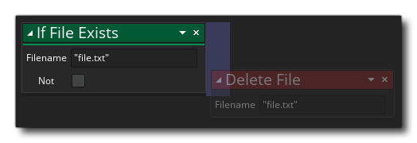

Si el archivo existe Si el archivo existe
Si el archivo existe Si el archivo existe Con esta acción puede verificar si existe un archivo con el nombre de pila. Usted selecciona el archivo para verificar (como un aguijón e incluir la extensión) y la función se retrunará true si existe, y false si no es así Tenga en cuenta que esto volverá true si el archivo existe en el paquete del juego como un archivo incluido o si el archivo se ha guardado mientras se estaba ejecutando el juego (consulte la sección sobre el sistema de archivos para obtener más información).
Tenga en cuenta que para agregar acciones al bloque "if", deben soltarse al lado de la acción, como se muestra en la imagen siguiente: 

Argumento Descripción Type El tipo de datos para leer, ya sea string (entre comillas ""), o real number
El código de bloque de acción anterior creará una variable para contener datos de búfer y luego comprobará si se ha realizado previamente un archivo de almacenamiento de búfer. Si el archivo existe, entonces se carga en la variable del búfer que hemos creado, pero si no existe, se crea, se escribe y luego se guarda listo para cargarse la próxima vez.